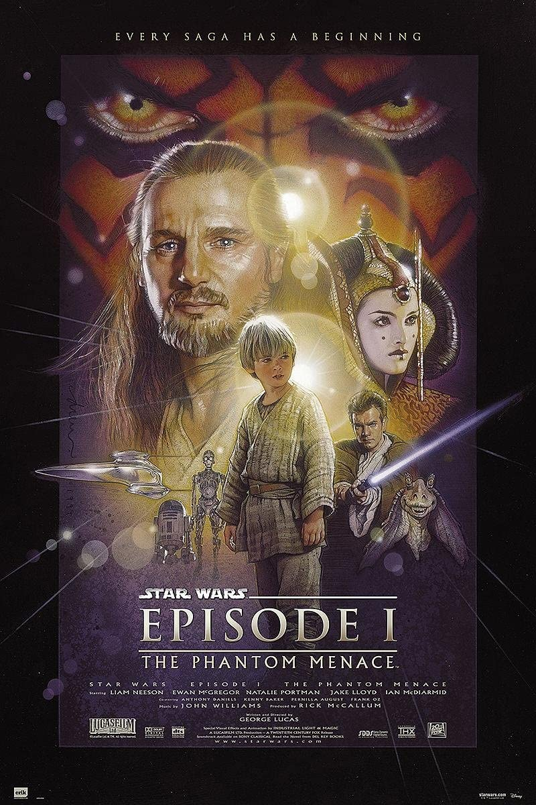

My favorite Movies & TV Shows
* every quote without a source is the description text on IMDb
-
The Big Short
"In 2006-2007 a group of investors bet against the US mortgage market. In their research, they discover how flawed and corrupt the market is."
-
Star Wars (Original Trilogy)

movie poster of
Star Wars The Empire Strikes Back"The original trilogy is the first installment of films of the Star Wars saga to be produced. These were the movies released from 1977 to 1983. They primarily focus on the Rebel Alliance trying to free the galaxy from the clutches of the Galactic Empire, as well as Luke Skywalker's quest to become a Jedi and face Sith Lord Darth Vader and his master Darth Sidious." - Source
-
Star Wars (Prequel Trilogy)
movie poster of
Star Wars The Phantom Menace"The prequel trilogy is the second installment of films of the Star Wars saga to be produced. They were released from 1999 to 2005. The prequel trilogy describes what had taken place 32 years up to 19 years before the events of Star Wars: Episode IV A New Hope. It primarily focuses on a young Darth Vader, then Jedi Anakin Skywalker, and an accompanying Obi-Wan Kenobi and the story of how they went from being friends to enemies and the tragedy of Anakin's descent into the dark side, as well as the origin of how the Galactic Republic became the Galactic Empire." - Source
-
True Detective: Season 1
"Constructed as a nonlinear narrative, season one focuses on Louisiana State Police homicide detectives Rustin "Rust" Cohle (McConaughey) and Martin "Marty" Hart (Harrelson), who investigated the murder of prostitute Dora Lange in 1995." - Source
-
Attack on Titan
"After his hometown is destroyed and his mother is killed, young Eren Jaeger vows to cleanse the earth of the giant humanoid Titans that have brought humanity to the brink of extinction."
-
Breaking Bad

"A high school chemistry teacher diagnosed with inoperable lung cancer turns to manufacturing and selling methamphetamine in order to secure his family's future."
-
Lord of the Rings Trilogy: Extended Version

movie poster of
LOTR Two Towers"The Lord of the Rings is the saga of a group of sometimes reluctant heroes who set forth to save their world from consummate evil. Its many worlds and creatures were drawn from Tolkien’s extensive knowledge of philology and folklore." - Source
-
Arrival

"A linguist works with the military to communicate with alien lifeforms after twelve mysterious spacecraft appear around the world."
-
Game of Thrones
"Nine noble families fight for control over the lands of Westeros, while an ancient enemy returns after being dormant for millennia."
-
Arcane

"Set in utopian Piltover and the oppressed underground of Zaun, the story follows the origins of two iconic League champions-and the power that will tear them apart."
-
The Office
"A mockumentary on a group of typical office workers, where the workday consists of ego clashes, inappropriate behavior, and tedium."
-
Pulp Fiction

"The lives of two mob hitmen, a boxer, a gangster and his wife, and a pair of diner bandits intertwine in four tales of violence and redemption."
-
Joker

"A mentally troubled stand-up comedian embarks on a downward spiral that leads to the creation of an iconic villain."
-
Princess Mononoke

"On a journey to find the cure for a Tatarigami's curse, Ashitaka finds himself in the middle of a war between the forest gods and Tatara, a mining colony. In this quest he also meets San, the Mononoke Hime."
-
Spirited Away

"During her family's move to the suburbs, a sullen 10-year-old girl wanders into a world ruled by gods, witches, and spirits, and where humans are changed into beasts."